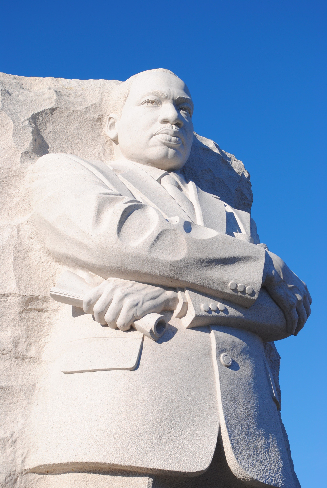

Martin Luther King Jr.: His Life, Leadership, Struggles and Lessons for Today

Stories & Life

Martin Luther King Jr. is remembered as one of the most important leaders in American history, but his story was not created by one famous speech or one historic photograph.
His journey began in Atlanta, Georgia, where he was raised in a religious family during a period when racial segregation shaped everyday life in the American South.
Through education, faith, public speaking, organizing and nonviolent activism, King became a leading voice in the struggle for civil rights.
His life also included arrests, threats, criticism, exhaustion, political pressure and enormous personal responsibility. Understanding those difficulties makes his achievements easier to appreciate.
Childhood and Family Background
Martin Luther King Jr. was born on January 15, 1929, in Atlanta, Georgia. His father, Martin Luther King Sr., was a Baptist minister, while his mother, Alberta Williams King, was deeply involved in family, church and community life.
King grew up in an African American community where education, religion and family were important parts of everyday life. At the same time, he lived under the realities of racial segregation.
Segregation affected schools, transportation, restaurants, public facilities, employment and many other areas. These conditions helped King understand inequality from an early age.
His childhood did not immediately reveal that he would become a national leader. Like many young people, he was developing his personality, interests and understanding of the world.
A person's circumstances can influence their thinking, but they do not necessarily determine what that person will accomplish. King grew up in a difficult social environment but developed a vision that extended beyond the limitations around him.
Education Changed His Direction
Education became an important part of King's development. He attended Morehouse College in Atlanta and graduated in 1948.
At Morehouse, he studied sociology and encountered ideas that encouraged him to think about justice, society and human responsibility.
He later attended Crozer Theological Seminary in Pennsylvania and continued his studies at Boston University, where he earned a doctorate in systematic theology.
His education strengthened his ability to think critically and communicate effectively. He learned to connect academic ideas with real social problems.
Education is more powerful when it improves the way you analyze problems, communicate with people and make decisions. A certificate can open a door, but knowledge becomes valuable when it is applied.
Becoming a Minister
King entered the ministry and became pastor of Dexter Avenue Baptist Church in Montgomery, Alabama, in 1954.
His religious background became an important part of his approach to leadership. He emphasized human dignity, justice, love and nonviolent action.
His position as a minister also gave him an opportunity to speak regularly to communities and develop his public-speaking ability.
That ability later became one of his greatest leadership tools.
The Montgomery Bus Boycott
In December 1955, Rosa Parks was arrested in Montgomery after refusing to give up her bus seat to a white passenger under the city's segregation system.
The incident contributed to a large community boycott of Montgomery's bus system.
King became president of the Montgomery Improvement Association, which helped coordinate the boycott.
The protest lasted more than a year. It required ordinary people to make sacrifices, organize transportation and remain committed to a common goal.
The boycott eventually contributed to a legal victory against segregation on Montgomery's buses.
It also brought King national attention.
Being unhappy about a problem is different from organizing a responsible response. The Montgomery movement showed how people can combine their efforts around a clearly defined objective.
Leadership Came With Danger
King's growing influence did not make his life easier. It made him a target.
He experienced arrests, threats and violence. His home was bombed during the Montgomery campaign.
These experiences demonstrate that leadership is not simply about receiving praise. Sometimes leadership involves accepting difficult responsibilities when the outcome is uncertain.
King continued advocating nonviolent resistance even when he faced hostility.
Creating a Wider Movement
In 1957, King helped establish the Southern Christian Leadership Conference, known as the SCLC.
The organization worked to coordinate nonviolent campaigns across the South.
This represented an important change in King's role. He was no longer only a local minister. He was becoming a national movement leader.
Large movements require planning, communication, fundraising, transportation, volunteers and cooperation. Behind every major public event are usually many people whose work receives less attention.
The Birmingham Campaign
Birmingham, Alabama, became another important location in the struggle against segregation.
Activists organized demonstrations challenging discriminatory practices. Protesters faced arrests and aggressive responses from authorities.
King was arrested during the campaign.
While imprisoned, he wrote a response defending the need to confront injustice rather than waiting indefinitely for change.
The Birmingham campaign received national attention and increased pressure for federal action on civil rights.
Avoiding an uncomfortable problem may make life easier temporarily, but it does not necessarily solve anything. Responsible action begins by recognizing what needs to change.
The March on Washington
In August 1963, hundreds of thousands of people gathered in Washington, D.C., during the March on Washington for Jobs and Freedom.
King delivered the speech that became famous for its repeated expression of a dream for racial equality.
The speech communicated a vision of an America in which racial discrimination would no longer determine a person's opportunities or treatment.
The event became one of the most recognizable moments of the civil rights era.
King demonstrated the ability of powerful communication to connect an idea with the emotions and hopes of a large audience.
A good idea becomes more useful when other people can understand it. Whether you are a student, employee, business owner or community leader, clear communication can help people cooperate with you.
The Civil Rights Act of 1964
The civil rights movement contributed to growing pressure for federal legislation.
The Civil Rights Act of 1964 became a major law addressing discrimination and segregation.
King's leadership was recognized internationally when he received the Nobel Peace Prize in 1964.
He was only 35 years old.
Rather than treating the award purely as a personal accomplishment, King connected the recognition to the broader movement.
The Nobel Peace Prize
King donated the prize money to civil rights organizations.
This decision illustrates an important idea about leadership: personal recognition can be used to strengthen a larger cause.
When you achieve something, think beyond yourself. Knowledge, money, contacts and influence can sometimes be used to help other people progress as well.
Selma and Voting Rights
Voting rights became another major focus of the movement.
In Selma, Alabama, activists challenged barriers that prevented many African Americans from exercising their voting rights.
The Selma-to-Montgomery marches in 1965 became nationally important.
The events helped build support for federal voting-rights protections.
The Voting Rights Act of 1965 became one of the most important legislative achievements of the civil rights era.
King's Vision Became Broader
King's concerns eventually extended beyond racial segregation.
He increasingly addressed poverty, economic inequality, employment and living conditions.
He recognized that legal equality did not automatically mean that every person had equal economic opportunity.
This broader focus demonstrates how leaders can deepen their understanding of a problem over time.
The Poor People's Campaign
King and other activists worked toward what became the Poor People's Campaign.
The campaign sought to bring attention to poverty and economic inequality affecting people from different backgrounds.
King's later work therefore connected racial justice with broader questions about economic opportunity and human dignity.
Learning does not stop when you reach one goal. New experiences can reveal other problems that need attention.
His Commitment to Nonviolence
Nonviolent resistance became a central part of King's leadership.
His approach was influenced by Christian teachings and by the example of Mahatma Gandhi.
Nonviolence did not mean doing nothing.
It involved organized demonstrations, boycotts, marches, speeches and other forms of resistance while attempting to avoid retaliation through violence.
Such an approach required discipline because participants sometimes faced insults, arrests and physical attacks.
In modern life, anger can easily damage relationships and opportunities. Learning to pause, think and respond deliberately can help people handle disagreements at home, at work and in business.
The Personal Cost of Leadership
Historical photographs often show King standing confidently before large crowds, but those images do not show the complete emotional pressure of his life.
He had family responsibilities, demanding travel schedules and constant public expectations.
He also faced surveillance, threats and criticism.
The lesson is important because successful people can appear strong while privately carrying significant pressure.
Leadership does not make someone immune to exhaustion or fear.
The Final Years
During the final years of his life, King continued to work on civil rights and economic justice.
He remained active despite increasing opposition and the physical demands of constant travel.
His focus was increasingly connected to the conditions of poor communities and workers.
He continued believing that social progress required ordinary people to participate rather than simply waiting for government or wealthy individuals to solve every problem.
Memphis and the Sanitation Workers
In 1968, King traveled to Memphis, Tennessee, to support sanitation workers who were seeking better working conditions and recognition.
The campaign connected labor rights with his broader concerns about economic dignity.
It was during this period that King delivered one of his final major speeches.
The speech reflected his awareness of danger while also expressing determination to continue the work.
The Assassination
On April 4, 1968, Martin Luther King Jr. was assassinated in Memphis, Tennessee.
He was 39 years old.
His death shocked the United States and the wider world.
The assassination led to widespread grief and unrest in American cities.
Although his life ended suddenly, the movement he helped lead continued.
Why His Legacy Remains Important
King's legacy remains important because his life raises questions that are still relevant to society.
How should people respond to injustice?
How can communities organize around a common goal?
How should leaders handle criticism?
How can education be transformed into useful action?
How can people disagree without allowing disagreement to destroy cooperation?
These questions extend beyond American history.
They can be applied to schools, workplaces, families, businesses and communities.
Lessons We Can Apply Today
1. Have a Clear Purpose
King's work was connected to a clear vision. People who want to accomplish something meaningful should understand what they are trying to change.
How to apply it
Before starting a major project, write down the problem you want to solve and the result you hope to achieve. A clear purpose makes it easier to measure progress.
2. Keep Learning
King's education influenced his ability to understand and communicate complex issues.
How to apply it
Read books, study reliable information, listen to experienced people and learn from mistakes. Education should continue throughout life.
3. Develop Communication Skills
King was a powerful communicator because he could connect ideas with ordinary human experiences.
How to apply it
Practice explaining your ideas clearly. Avoid unnecessary complicated language when a simple explanation will work better.
4. Do Not Give Up After a Setback
King faced arrests, criticism and threats but continued his work.
How to apply it
If a business fails, an examination goes badly or an opportunity disappears, examine what happened before deciding that your entire future is finished.
5. Build With Other People
King did not create the civil rights movement alone. Thousands of people participated.
How to apply it
Find reliable people who share a constructive goal. Cooperation can turn an individual idea into a stronger community effort.
6. Control Your Response to Conflict
Nonviolent activism required discipline.
How to apply it
When an argument becomes heated, pause before responding. Ask whether your response will solve the problem or make it worse.
7. Use Your Opportunities Well
King used his education, public platform and international recognition to support causes larger than himself.
How to apply it
If you gain money, education, influence or professional experience, consider how part of what you have learned can help someone else.
8. Think Beyond Immediate Success
King's work developed over many years. His goals became broader as he learned more about the problems facing American society.
How to apply it
Do not measure your entire life by one achievement. Think about the kind of person and community you want to build over many years.
9. Treat People With Dignity
A major theme of King's leadership was the dignity of human beings.
How to apply it
Treat coworkers, customers, family members and strangers with basic respect. Respect does not require agreement on every issue.
10. Leave Something Useful Behind
King's influence survived because his work affected people beyond his own lifetime.
How to apply it
Think about what you are building that could benefit people after you are gone. It might be knowledge, a business, a community project, a family tradition or service to others.
What Young People Can Learn From King
Young people can learn that age does not automatically prevent someone from making an important contribution.
King was relatively young when he became a national figure.
His example does not mean every young person must become famous. Instead, it shows that young people can develop skills, educate themselves, participate in their communities and take responsibility for constructive change.
The most useful lesson is not to copy someone's personality. It is to understand the principles behind their achievements and apply appropriate principles to your own circumstances.
What Workers and Business Owners Can Learn
King's life also contains lessons relevant to professional life.
He understood preparation, communication, organization and teamwork.
A successful business or workplace also requires people who can communicate goals, resolve disagreements and cooperate.
Leaders should not expect people to follow them simply because they have a title. Trust is built through consistency, responsibility and respect.
What Families Can Learn
Families can also learn from the importance King placed on values and communication.
Strong relationships require people to listen, explain themselves and handle disagreements responsibly.
No family is perfect, and historical figures should not be treated as perfect human beings.
The useful lesson is to recognize that relationships require patience, responsibility and continued effort.
What Communities Can Learn
King's work demonstrated the power of organized communities.
A community does not always need to wait for a famous person to solve its problems.
Residents can identify local issues, discuss possible solutions, organize responsibly and work with appropriate institutions.
Constructive community participation can be useful in education, environmental protection, youth development, public health education and many other areas.
His Legacy in American History
Martin Luther King Jr. occupies a significant place in American history because his leadership helped bring national attention to the struggle for civil rights.
The movement involved many people and organizations, and King was one important leader among many.
Remembering him should therefore not mean forgetting the thousands of ordinary Americans who marched, boycotted, registered voters, organized communities, faced arrests and continued working when cameras were absent.
That broader perspective makes the story more meaningful.
A Final Reflection
Martin Luther King Jr.'s life was short, but the period in which he lived contained enormous social change.
He experienced success, criticism, danger, public recognition and personal pressure.
His story demonstrates that leadership is not simply about standing before a crowd. It involves preparation, responsibility, communication, sacrifice and the ability to continue working toward a goal.
For modern readers, the most useful lesson is not that everyone should become a famous activist or public speaker.
The deeper lesson is that ordinary people can choose to develop useful skills, stand for their principles, cooperate with others and contribute to their communities.
A person does not need millions of followers to make a positive difference.
A student can help another student.
A worker can treat colleagues fairly.
A business owner can serve customers honestly.
A parent can teach children respect.
A community member can participate in solving local problems.
These actions may appear small individually, but social progress is often built from many individual decisions.
The most powerful lesson from King's life is that a meaningful purpose requires action. Ideas matter, speeches matter and dreams matter, but lasting progress also requires discipline, cooperation, courage and consistent effort.
Conclusion
Martin Luther King Jr. remains an important figure in American history because his life connected personal courage with a wider vision for society.
From his childhood in Atlanta to his education, ministry, leadership during the Montgomery Bus Boycott, involvement in the Birmingham campaign, the March on Washington, the struggle for voting rights and his later work against poverty, his journey contained many different chapters.
His life ended in 1968, but the questions raised by his work continue to matter.
How do we respond when something is unfair?
How do we communicate difficult ideas?
How do we remain disciplined when we are under pressure?
How can success be used to help others?
And what kind of legacy do we want to leave?
Those questions make the study of Martin Luther King Jr. more than a history lesson. They make it an opportunity for personal reflection.
His story reminds us that progress can take time, that leadership can be difficult and that meaningful change often requires many people working together.
Enjoy Stories Like This?
Follow Stories & Life on Facebook for more biographies, historical stories and practical lessons from remarkable lives.
Follow Us on Facebook